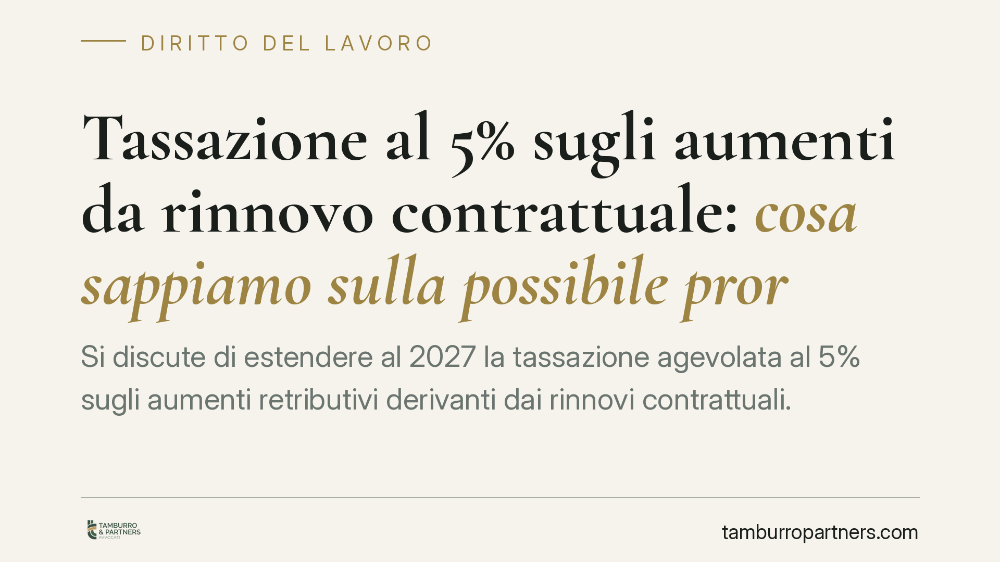

Tassazione al 5% sugli aumenti da rinnovo contrattuale: cosa sappiamo sulla possibile proroga al 2027
Si discute di estendere al 2027 la tassazione agevolata al 5% sugli aumenti retributivi derivanti dai rinnovi contrattuali. È bene distinguere ciò che è già previsto per il 2026 da ciò che resta una semplice ipotesi di proroga, ancora priva di veste normativa definitiva. Vediamo il meccanismo, la platea interessata e gli adempimenti da presidiare.

Il fatto
Secondo quanto riportato dalla stampa specializzata, il Governo starebbe valutando di prorogare al 2027 il regime di tassazione agevolata al 5% sugli incrementi retributivi derivanti dai rinnovi dei contratti collettivi. Si tratterebbe dell'estensione di una misura la cui operatività è attualmente riferita al 2026.
Una precisazione doverosa, prima di entrare nel merito: allo stato, la proroga al 2027 è un'ipotesi di lavoro emersa nel dibattito sulla manovra, non una norma vigente. È quindi opportuno tenere distinti due piani: il regime applicabile nell'anno in corso e la sua possibile prosecuzione futura, che dipenderà dal contenuto definitivo della prossima legge di Bilancio.
Inquadramento normativo
La misura consiste in un'imposta sostitutiva applicata con aliquota ridotta sulla quota di retribuzione che deriva dai rinnovi contrattuali. L'imposta sostitutiva è un prelievo che si applica "in luogo" della tassazione ordinaria IRPEF: al reddito interessato non si applicano gli scaglioni progressivi, ma un'aliquota fissa (nel caso, il 5%).
Il vantaggio è tanto più significativo quanto più alta è l'aliquota marginale del lavoratore, cioè l'aliquota che colpisce l'ultima fascia del suo reddito. Per chi si colloca su scaglioni IRPEF elevati, la differenza tra tassazione ordinaria e sostitutiva al 5% può essere rilevante. Per chi ha redditi bassi, il beneficio è più contenuto.
L'agevolazione è riferita, secondo le stime di stampa, ai lavoratori dipendenti con reddito fino a circa 33.000 euro annui, per una platea indicata intorno ai 3,8 milioni di soggetti. Si tratta di dati da leggere come cifre di relazione tecnica e non come valori consolidati: l'estremo normativo preciso (numero della legge, articolo e comma) va verificato sul testo pubblicato prima di ogni applicazione operativa.
Implicazioni pratiche
Il punto tecnico centrale è la corretta qualificazione delle somme. L'aliquota agevolata riguarda unicamente la quota retributiva che deriva dal rinnovo contrattuale, non l'intera busta paga né altre voci (premi, straordinari, indennità estranee al rinnovo). Applicare l'imposta sostitutiva a componenti non ammesse espone a rettifiche.
La responsabilità dell'applicazione ricade in primo luogo sul sostituto d'imposta, cioè il datore di lavoro che trattiene e versa le imposte per conto del dipendente. In caso di errata qualificazione delle somme o di applicazione dell'aliquota ridotta oltre i limiti, il sostituto risponde delle maggiori imposte e delle relative sanzioni. Non è un tema meramente contabile: è un profilo di rischio da presidiare in sede di elaborazione delle retribuzioni.
Attenzione, inoltre, al superamento della soglia di reddito in corso d'anno. Il requisito reddituale va valutato sull'intero periodo d'imposta: un lavoratore che si colloca sotto la soglia a inizio anno può superarla per effetto di variazioni retributive successive, con conseguente venir meno dei presupposti dell'agevolazione e necessità di conguaglio.
Cosa fare in concreto
- Verificare l'estremo normativo aggiornato: prima di applicare il regime, controllare il testo di legge pubblicato in Gazzetta Ufficiale, per confermare aliquota, soglia e perimetro delle somme agevolabili.
- Isolare la quota da rinnovo: distinguere in busta paga l'incremento derivante dal rinnovo dalle altre voci retributive, per evitare estensioni indebite dell'aliquota ridotta.
- Monitorare la soglia reddituale: impostare un controllo in corso d'anno sui redditi prossimi al limite, così da gestire per tempo eventuali conguagli.
- Documentare le scelte applicative: conservare i criteri di qualificazione adottati, a tutela del sostituto d'imposta in caso di controllo.
- Non dare per acquisita la proroga 2027: è prudente non fondare scelte retributive o negoziali sul presupposto di un'estensione che, ad oggi, non è formalizzata.
Uno sguardo all'iter
Sul piano operativo, il messaggio è duplice. Per il 2026 esiste un regime la cui applicazione va comunque riscontrata sul testo normativo vigente. Per il 2027, invece, siamo di fronte a una prospettiva politica: fino all'approvazione e alla pubblicazione della relativa legge di Bilancio, ogni valutazione va formulata in termini di ipotesi, non di certezza.
---
*Contributo informativo a cura di Tamburro & Partners – Avv. Giuseppe Tamburro. Non costituisce parere legale.*
Ogni storia di lavoro ha i suoi tempi.
Se gestisci HR e vuoi un confronto su contenzioso, ispezioni o licenziamenti, scrivi allo studio. Ti rispondiamo entro un giorno lavorativo.